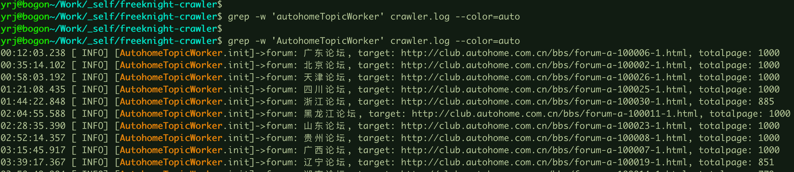
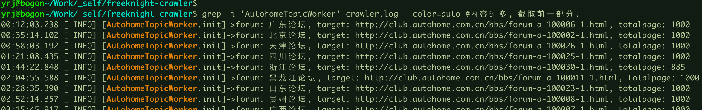
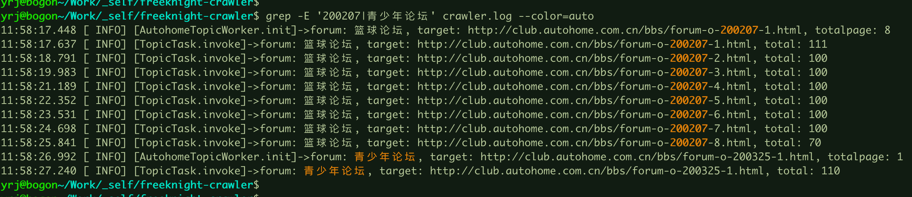

-w 精准匹配, 理解为: 区分大小写, 精准匹配待过滤的表达式.
grep -w 'AutohomeTopicWorker’ crawler.log

-i 忽略大小写, 若表达式为: 'AutohomeTopicWorker', 则能匹配出: 'AutohomeTopicWorker'、'autohometopicworker'、etc.
grep -i 'AutohomeTopicWorker' crawler.log

-E 过滤多个表达式, 采用|分割表达式
grep -E '200207|青少年论坛’ crawler.log

^ 前缀匹配, $ 后缀匹配, 用来正则匹配表达式作为前缀和结尾
grep '^11:49:5’ crawler.log
grep '41$' crawler.log --color=auto #后缀匹配